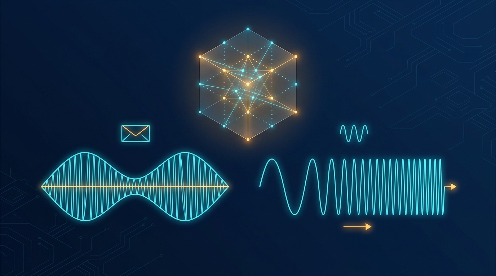
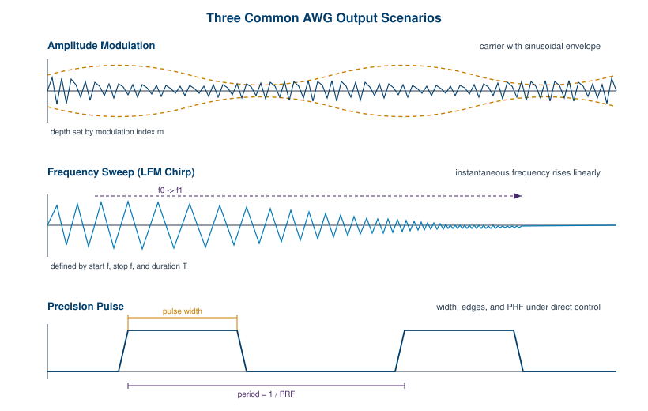
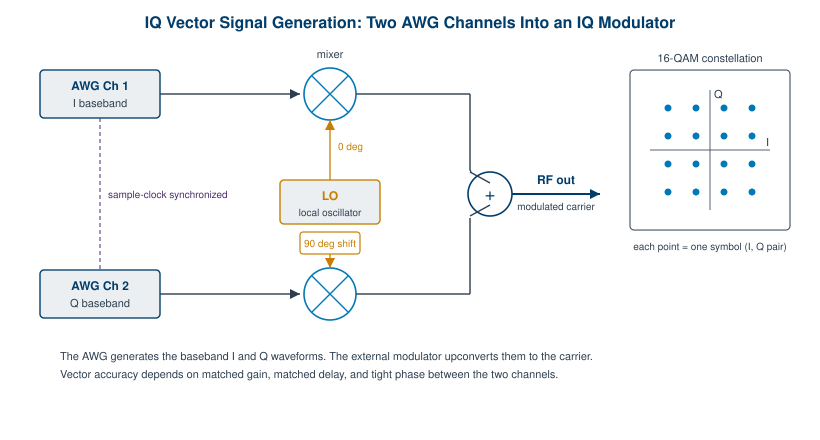

Chapter 6: Modulation and Signal Scenarios

A plain sine wave is a useful thing, but the world does not communicate in plain sine waves. It communicates in signals that carry information, and information lives in the way a signal changes. Modulation is the controlled changing of a carrier so that it carries something more than its own frequency. An arbitrary waveform generator is unusually good at this, because it can either modulate a carrier with a dedicated engine or, more powerfully, compute the entire finished signal in software and simply play the samples back. This chapter walks through both paths, from textbook AM and FM up to wideband multi-emitter scenarios that would have required a rack of equipment a generation ago.
The mental shift worth making early is this. On a traditional signal generator, modulation is a feature bolted onto a carrier. On an AWG, modulation is often just arithmetic done before the samples reach the DAC. That distinction shapes everything about how flexible the instrument is, and it is the reason an AWG can reproduce signals that no dedicated modulator was ever designed to make.
6.1 Analog Modulation: AM, FM, and PM
Amplitude modulation varies the carrier amplitude in step with a message signal. The classic form multiplies the carrier by (1 + m·cos(2πf_m t)), where m is the modulation index and f_m is the modulating frequency. An index of 0.5 means the envelope swings to plus and minus 50 percent of the carrier amplitude. Push the index to 1.0 and the envelope just touches zero at the troughs. Push past 1.0 and you get overmodulation, where the envelope clips through zero and the recovered message distorts. An AWG handles AM in one of two ways: a built-in modulation engine that takes a carrier setting and a modulating source, or direct synthesis where you compute every output sample as the product of carrier and envelope and load the result into waveform memory.
Frequency modulation varies the instantaneous frequency of the carrier around its center value. The key parameter is the frequency deviation, the maximum swing away from center. A deviation of 75 kHz, the broadcast FM standard, means the carrier moves up to 75 kHz above and below its nominal frequency at the peaks of the message. The ratio of deviation to the highest modulating frequency gives the modulation index for FM, which in turn sets how much bandwidth the signal occupies. Carson's rule is the quick estimate engineers reach for: bandwidth is roughly twice the sum of the peak deviation and the highest message frequency.
Phase modulation is FM's close cousin. Instead of shifting the instantaneous frequency, it shifts the instantaneous phase in proportion to the message. The two are mathematically linked, since frequency is the time derivative of phase, and many systems treat them as a single capability. On an AWG that computes samples directly, AM, FM, and PM are all just different ways of filling the same array of numbers. You decide, sample by sample, what amplitude and phase the output should have, and the DAC does the rest.

Engineer's corner. The direct-synthesis approach has a quiet advantage that catches people by surprise. Because you compute the whole waveform before it plays, you can apply corrections that a real-time modulator cannot. Predistortion for a known amplifier nonlinearity, a precise phase relationship between two tones, an envelope that follows an arbitrary curve rather than a sine: all of it is just a different formula in the sample-generation step. The DAC never knows the difference.
6.2 Pulse and Chirp Generation
Precise pulses are the bread and butter of radar, ranging, and timing work. An AWG gives you direct control over the three things that matter most: pulse width, edge shape, and pulse repetition frequency. Width sets how long the pulse stays high. Edge shape, the rise and fall time, controls the spectral content, since fast edges spread energy across a wider band. Pulse repetition frequency, or PRF, sets how often the pulse repeats, and its inverse is the pulse repetition interval. Because the AWG builds the pulse from samples, you are not limited to rectangles. Gaussian pulses, raised-cosine shapes, and custom envelopes that suppress spectral splatter are all within reach.
Frequency chirps sweep the carrier frequency across the duration of a pulse. The linear frequency modulated chirp, or LFM, is the workhorse of pulse-compression radar. You define it with three numbers: a start frequency, a stop frequency, and a sweep duration. The instantaneous frequency rises (or falls) linearly between the two endpoints over the sweep time. The appeal of the chirp is that it lets a radar transmit a long pulse for energy but resolve targets as if it sent a short one, by compressing the echo in a matched filter. Nonlinear chirps, where the frequency follows a curve rather than a straight line, trade some compression efficiency for lower range sidelobes, and an AWG generates them as easily as the linear case because it is, again, just a different formula per sample.
The sample-rate budget is where chirps get demanding. A chirp that sweeps to a high stop frequency needs enough samples per cycle at that highest frequency to avoid aliasing, which means the sweep bandwidth, not just the center frequency, drives the required sample rate. Wide, fast chirps are exactly why high sample-rate AWGs exist. Berkeley Nucleonics positions its high-speed models, such as the Model 685 family and the flagship Model 686, for this kind of demanding wideband work. Confirm the current sweep and bandwidth figures against the datasheet at berkeleynucleonics.com before you commit a design to them.
6.3 IQ and Vector Signal Generation
Any modulated signal can be written as a carrier whose amplitude and phase change over time. There is a tidier way to express that, and it underpins almost all modern radio. In-phase and quadrature representation splits the signal into two baseband components: I, the part in phase with a reference carrier, and Q, the part shifted ninety degrees from it. The transmitted signal is I·cos(2πf_c t) - Q·sin(2πf_c t). Any combination of amplitude and phase reduces to a pair of I and Q values, which is why this representation is so general. Amplitude is the length of the I and Q vector, phase is its angle.
This is where an AWG with two synchronized channels earns its keep. You drive the I component out of one channel and the Q component out of the other, then feed both into an external IQ modulator that mixes them against a local oscillator and its ninety-degree-shifted copy. The modulator sums the two mixer outputs and produces a single modulated RF signal at the carrier frequency. The AWG generates only the baseband I and Q, which keeps the sample rate manageable, while the upconversion to RF happens in analog hardware downstream.

Baseband versus RF is the practical fork in the road. A baseband IQ approach keeps the AWG running at modest sample rates and pushes the carrier frequency into an external modulator, which is efficient and flexible. A direct-RF approach skips the external modulator entirely and synthesizes the modulated carrier at full frequency inside the AWG, which demands a very high sample rate but removes the analog imperfections of an external mixer. High sample-rate instruments make direct RF generation possible for carriers that used to require upconversion.
The constellation is the picture that ties it together. Plot Q against I and each valid symbol becomes a point. A 16-QAM signal has sixteen points in a four-by-four grid, each encoding four bits. The job of the AWG and modulator is to land the signal on those points cleanly. Gain imbalance between the I and Q channels skews the constellation. A phase error between them rotates and shears it. Timing skew smears the symbols. This is why channel-to-channel matching, in gain, delay, and phase, is the quality that separates a good vector source from a mediocre one.
Pro tip. When a constellation looks rotated or lopsided and the math is right, suspect the analog path before the waveform. A few tens of picoseconds of skew between the I and Q channels, or a fraction of a decibel of gain mismatch, will distort an otherwise perfect signal. Calibrate the channel matching first, then trust your samples.
6.4 Digital Modulation and Wideband Scenarios
Digital modulation maps bits onto discrete states of the carrier. The four foundational families each vary a different property. ASK (amplitude-shift keying) switches amplitude between levels, on-off keying being the simplest case. FSK (frequency-shift keying) hops between discrete frequencies. PSK (phase-shift keying) selects among fixed phase states, with QPSK using four phases to carry two bits per symbol. QAM (quadrature amplitude modulation) varies both amplitude and phase together, packing more bits per symbol as the constellation grows from 16-QAM to 64, 256, and beyond. The trade is always the same: denser constellations carry more bits but demand a cleaner signal and a higher signal-to-noise ratio to keep the points distinct.
Modern communications stack these schemes into wideband waveforms. OFDM (orthogonal frequency-division multiplexing) spreads data across hundreds or thousands of closely spaced subcarriers, each carrying its own QAM symbol, which is the backbone of Wi-Fi, LTE, and 5G NR. Generating an OFDM symbol means computing an inverse FFT of the subcarrier values, which produces a baseband waveform with a high peak-to-average power ratio and a wide instantaneous bandwidth. An AWG handles this naturally because the whole point of the instrument is to play back arbitrary computed samples. You build the 5G NR or Wi-Fi baseband frame in software, load it into memory, and play it out as I and Q.
The same memory-playback model scales to scenarios that have nothing to do with a single transmitter. Multi-emitter and electronic warfare scenarios combine many signals (radar pulses from several directions, communication links, jammers, and interferers) into one composite waveform computed directly in memory. Because every emitter is just more arithmetic added to the same sample stream, an AWG can play back a dense, realistic RF environment from a single pair of channels. Deep waveform memory and sequencing, covered in the previous chapter, are what make long scenario playback practical without running out of room.
| Modulation type | What it varies | Typical use | What it tests in a receiver |
|---|---|---|---|
| AM | Amplitude | Broadcast, telemetry | Envelope detection, linearity |
| FM / PM | Frequency or phase | Broadcast, analog radio | Discriminator response, capture effect |
| ASK / OOK | Amplitude (discrete) | Simple data links, RFID | Threshold detection, AGC |
| FSK | Frequency (discrete) | Low-rate telemetry, paging | Frequency discrimination, drift tolerance |
| PSK / QPSK | Phase (discrete) | Satellite, deep-space links | Carrier and phase recovery |
| QAM (16 to 256+) | Amplitude and phase | Cable, Wi-Fi, cellular | SNR margin, EVM, equalization |
| OFDM | Many subcarriers, each QAM | 5G NR, Wi-Fi, LTE | Channel estimation, PAPR handling |
6.5 Building Realistic Scenarios
A clean signal proves a receiver works in a laboratory. A realistic signal proves it works in the world, and the world is messy. The value of computing waveforms in memory is that you can add impairments deliberately, in known and repeatable amounts, to find exactly where a receiver starts to fail. This turns the AWG into a controlled stress source rather than a tidy reference.
Additive noise is the first impairment most engineers reach for. Summing band-limited Gaussian noise onto a signal at a known power level sets a precise signal-to-noise ratio, which lets you sweep a receiver's bit-error rate against SNR and plot the curve that defines its sensitivity. Interference goes a step further: a second signal, an adjacent-channel emitter, or a continuous-wave tone parked near the band edge reveals how well the receiver's filtering and dynamic range hold up. Multipath models the reflections of a real propagation channel by adding delayed, attenuated, and phase-shifted copies of the signal, which is how you reproduce fading and the intersymbol interference that an equalizer has to fight.
Other impairments target specific failure modes. Phase noise smeared onto the carrier tests carrier-recovery loops. Frequency offset checks the acquisition range of a demodulator. Amplitude and phase imbalance, deliberately injected, confirms that an IQ receiver can correct what an imperfect transmitter sends. Because each impairment is a known formula applied to known samples, you can dial it up until the receiver breaks, then back off to find its true margin.
Replaying recorded RF environments closes the loop with reality. Capture a real signal environment with a wideband receiver or digitizer, store the I and Q samples, and load them into the AWG to replay the exact same environment on the bench, as many times as you like. A field problem that happened once, at an awkward location, becomes a repeatable test case you can run against firmware revision after firmware revision. That repeatability is the quiet superpower of memory-based generation. The hard part of testing is usually not creating a failure, it is creating the same failure twice.
Engineer's corner. Keep a small library of impairment recipes alongside your waveforms: a fixed-seed noise file at several SNR points, a two-ray and a five-ray multipath profile, a phase-noise mask, and a couple of recorded captures from the field. Reusing the same impairments across projects makes results comparable over time, and a fixed random seed means your noise is reproducible rather than merely random.
Check Your Understanding
Five quick questions on this chapter. Your answers save on this device.